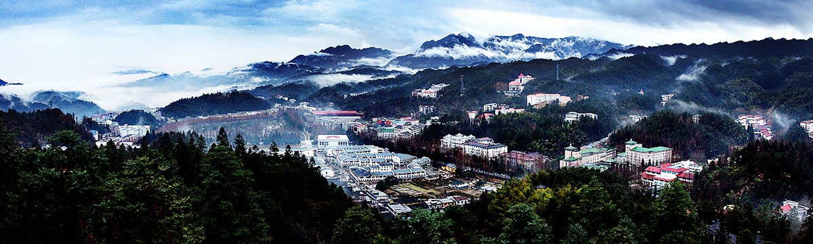
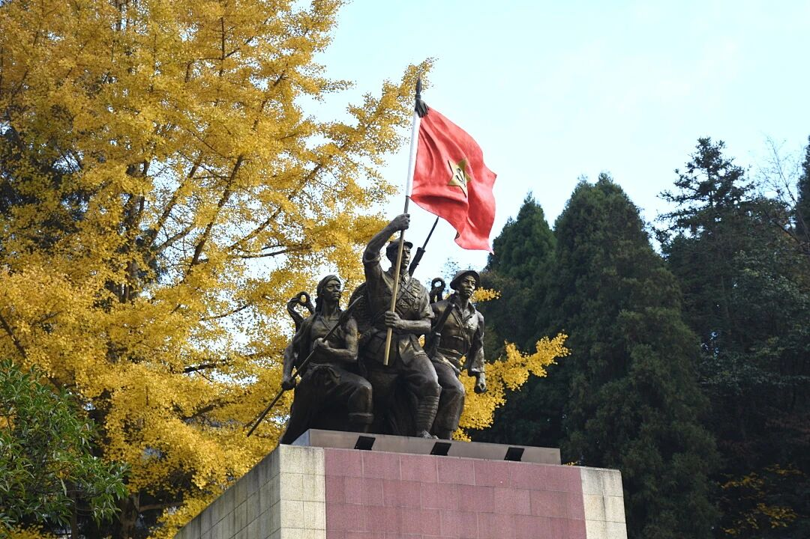
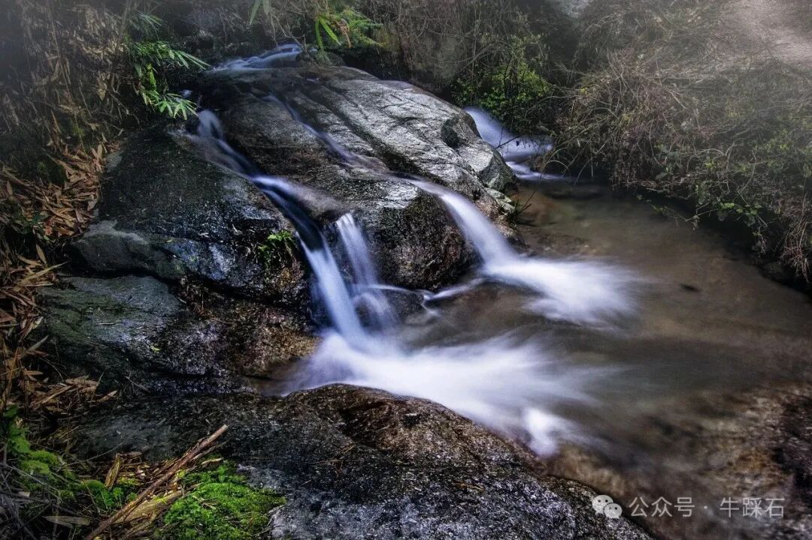
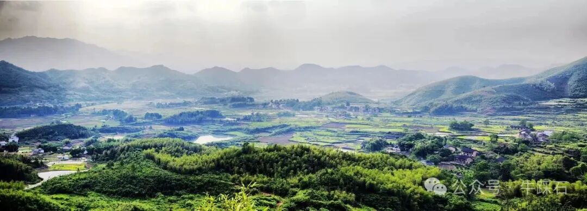

井冈山地处湘赣两省交界的罗霄山脉中段，古有“郴衡湘赣之交，千里罗霄之腹”之称。1950年设立井冈山特别区，1959年成立省辖井冈山管理局，1981年撤局设县，1984年撤县设市，2000年原井冈山市与原宁冈县合并组建新的井冈山市，2005年成立井冈山管理局。2020年区划调整后，井冈山市辖16个乡镇街道、141个行政村，国土面积1449.28平方公里，人口19万人。井冈山先后荣获国家5A级旅游景区、全国文明风景旅游区、国家卫生城、全国双拥模范城、全国社会治安综合治理先进单位、全国“两山”实践创新基地、国家生态文明建设示范市等国家级荣誉称号，连续10年获江西省高质量发展综合考评先进县（市、区）。

井冈山以其辉煌灿烂的革命历史，铸就了蜚声中外的“红色摇篮”。上世纪二十年代末，毛泽东、朱德等老一辈无产阶级革命家在这里创建了中国第一个农村革命根据地，开辟了“农村包围城市，武装夺取政权”具有中国特色的革命道路，点燃了中国革命的星星之火，中国革命从这里走向胜利。井冈山斗争时期，牺牲的革命烈士达4.8万人，参加过井冈山斗争的开国元勋有54位，中华人民共和国成立后成为省部级干部的有26位，井冈山被誉为“中国革命的摇篮”和“中华人民共和国的奠基石”。

井冈山以其绚丽多姿的自然风光，被世人赞叹为“绿色宝库”。这里植被丰富、物种多样，森林覆盖率达86%，有全球同纬度迄今保存最完整的次原始森林7000公顷，野生植物4177种，野生动物3362种，活立木蓄积量1293万立方米，多年平均水资源总量为16.14亿立方米，是“世界生物圈保护区”。这里风光优美、环境优良，拥有11个景区、76个景点、460处景观景物，是理想的旅游休闲、避暑疗养胜地。
井冈山以其深邃厚重的文化底蕴，成为人们心中的“精神家园”。巍巍五百里井冈，104处革命旧址遗迹散落其间，已经成为一座没有围墙的革命历史博物馆。两年零四个月的井冈山斗争，创造了具有原创意义的井冈山精神。如今的井冈山已经成为人们心目中永恒的信念高地和永远的精神家园。

黄洋界——井冈山五大哨口之一，有“一夫当关，万夫莫开”之险。四周崇山峻岭，万峰竞险：南部山冈星罗棋布，古称“万箩倒米”；北部峭壁深渊，长满松竹杜鹃；气候四季变幻多端，云雾弥漫，故又称“汪洋界”。毛泽东同志曾赋诗曰：“过了黄洋界，险处不须看。”
景致有黄洋界保卫战旧址、红军挑粮休息处旧址——黄洋界荷树、八面山红军哨口工事旧址、双马石红军哨口工事旧址、雷打石革命旧址、大井革命旧址群、上井红军造币厂旧址、百竹园、荆竹山、领袖峰景区等，景景相扣，层层相叠。
